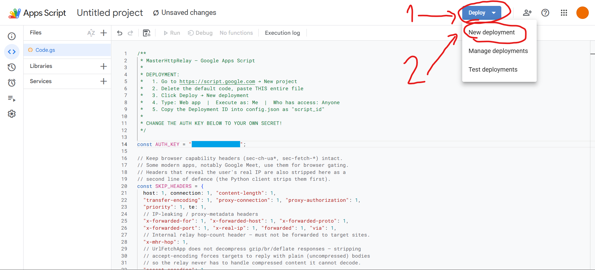
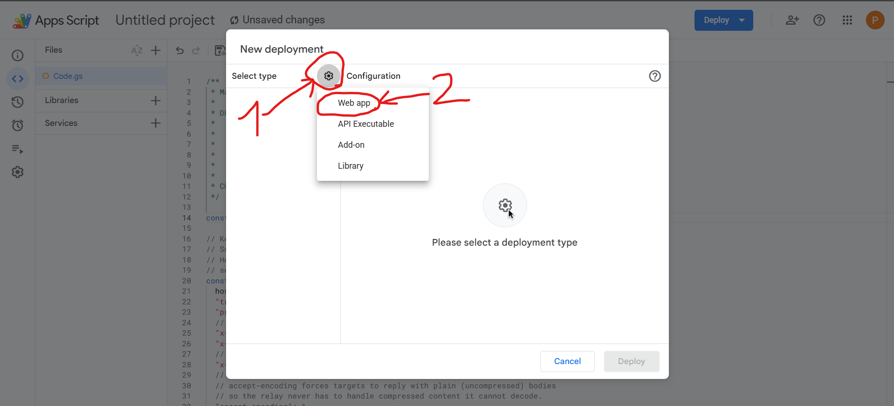
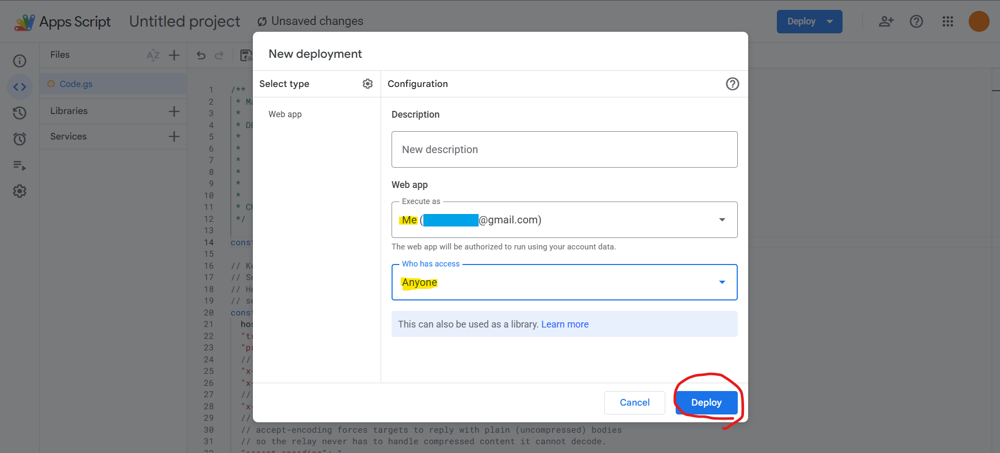
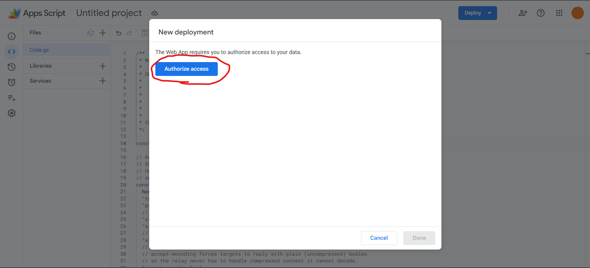
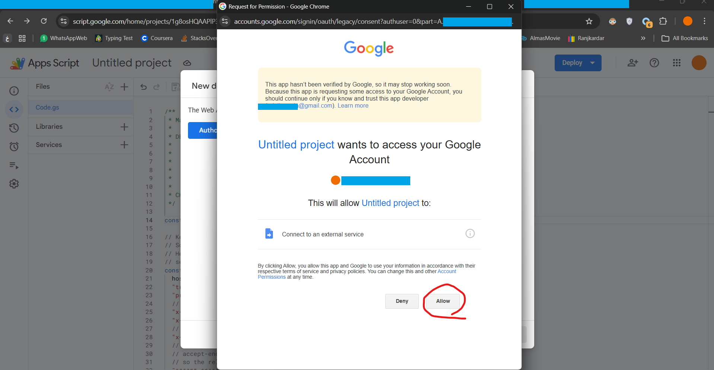
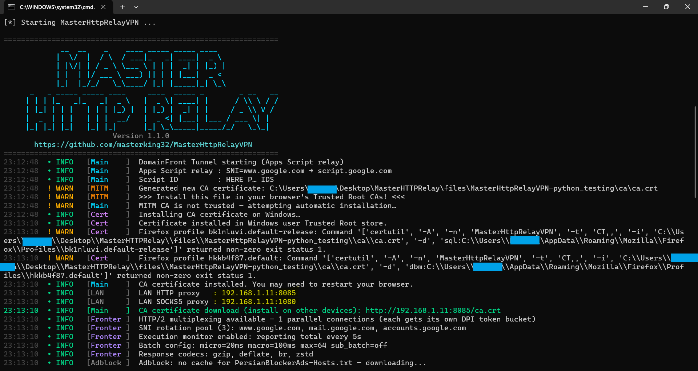
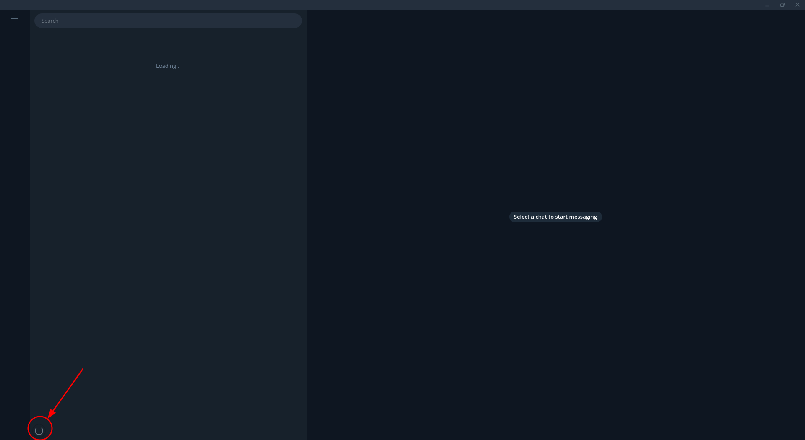

استخراج فایل zip پروژه
فایل zip پروژه را دانلود میکنیم.
-
با کلیک راست بر روی آن، و انتخاب محل اکسترکت، آن را باز میکنیم و پوشهای که انتخاب کرده بودیم را به خاطر میسپاریم.

-
محلی که فایل اکسترکت شده را به خاطر بسپارید.

راه اندازی Google Script (نیازمند VPN)
وارد Google Script میشویم.
-
روی New Project کلیک میکنیم.

-
محتویات فایل Code.gs که در پوشه app_scripts ذخیره شده و در زیر هم آمده است را در صفحه باز شده جایگزین میکنیم.
/** * MasterHttpRelay — Google Apps Script * * DEPLOYMENT: * 1. Go to https://script.google.com → New project * 2. Delete the default code, paste THIS entire file * 3. Click Deploy → New deployment * 4. Type: Web app | Execute as: Me | Who has access: Anyone * 5. Copy the Deployment ID into config.json as "script_id" * * CHANGE THE AUTH KEY BELOW TO YOUR OWN SECRET! */ const AUTH_KEY = "CHANGE_ME_TO_A_STRONG_SECRET"; // Keep browser capability headers (sec-ch-ua*, sec-fetch-*) intact. // Some modern apps, notably Google Meet, use them for browser gating. // Headers that reveal the user's real IP are also stripped here as a // second line of defence (the Python client strips them first). const SKIP_HEADERS = { host: 1, connection: 1, "content-length": 1, "transfer-encoding": 1, "proxy-connection": 1, "proxy-authorization": 1, "priority": 1, te: 1, // IP-leaking / proxy-metadata headers "x-forwarded-for": 1, "x-forwarded-host": 1, "x-forwarded-proto": 1, "x-forwarded-port": 1, "x-real-ip": 1, "forwarded": 1, "via": 1, // Internal relay hop-count header — must not be forwarded to target sites. "x-mhr-hop": 1, // UrlFetchApp does not decompress gzip/br/deflate responses — stripping // accept-encoding forces targets to reply with plain (uncompressed) bodies // so the relay never has to handle compressed content it cannot decode. "accept-encoding": 1, }; // Pattern that matches any Google Apps Script execution endpoint. // Used to detect relay loops when an exit node is misconfigured to // point back at a GAS deployment. var _GAS_URL_RE = /^https?:\/\/script\.google\.com\/macros\//i; // If fetchAll fails, only retry methods that are safe to replay. const SAFE_REPLAY_METHODS = { GET: 1, HEAD: 1, OPTIONS: 1 }; function doPost(e) { try { var req = JSON.parse(e.postData.contents); if (req.k !== AUTH_KEY) return _json({ e: "unauthorized" }); // Batch mode: { k, q: [...] } if (Array.isArray(req.q)) return _doBatch(req.q); // Single mode return _doSingle(req); } catch (err) { return _json({ e: String(err) }); } } // Compress a byte array with gzip to reduce bytes-on-wire over DPI-shaped // connections. Returns {b: byteArray, gz: true} if compression saves space, // otherwise {b: original, gz: false}. This can cut text payloads by 60-80%. function _maybeGzip(bytes) { try { var compressed = Utilities.gzip(Utilities.newBlob(bytes)).getBytes(); if (compressed.length < bytes.length) { return { b: compressed, gz: true }; } } catch (e) { // Gzip failed — fall through to uncompressed } return { b: bytes, gz: false }; } function _doSingle(req) { if (!req.u || typeof req.u !== "string" || !req.u.match(/^https?:\/\//i)) { return _json({ e: "bad url" }); } // Loop guard: refuse to relay back to any Apps Script deployment. // This fires when an exit node URL is misconfigured to point at a GAS // script — without this check the script would call itself indefinitely // and burn through the daily UrlFetch quota in seconds. if (_GAS_URL_RE.test(req.u)) { return _json({ e: "loop detected: relay target cannot be a Google Apps Script URL" }); } var opts = _buildOpts(req); var resp = UrlFetchApp.fetch(req.u, opts); var gz = _maybeGzip(resp.getContent()); var result = { s: resp.getResponseCode(), h: _respHeaders(resp), b: Utilities.base64Encode(gz.b), }; if (gz.gz) result.gz = 1; return _json(result); } function _doBatch(items) { var fetchArgs = []; var fetchIndex = []; var fetchMethods = []; var errorMap = {}; for (var i = 0; i < items.length; i++) { var item = items[i]; if (!item || typeof item !== "object") { errorMap[i] = "bad item"; continue; } if (!item.u || typeof item.u !== "string" || !item.u.match(/^https?:\/\//i)) { errorMap[i] = "bad url"; continue; } if (_GAS_URL_RE.test(item.u)) { errorMap[i] = "loop detected: relay target cannot be a Google Apps Script URL"; continue; } try { var opts = _buildOpts(item); opts.url = item.u; fetchArgs.push(opts); fetchIndex.push(i); fetchMethods.push(String(item.m || "GET").toUpperCase()); } catch (err) { errorMap[i] = String(err); } } // fetchAll() processes all requests in parallel inside Google var responses = []; if (fetchArgs.length > 0) { try { responses = UrlFetchApp.fetchAll(fetchArgs); } catch (err) { // If fetchAll fails as a whole, degrade to per-item fetch so one bad // request does not poison the full batch. responses = []; for (var j = 0; j < fetchArgs.length; j++) { try { if (!SAFE_REPLAY_METHODS[fetchMethods[j]]) { errorMap[fetchIndex[j]] = "batch fetchAll failed; unsafe method not replayed"; responses[j] = null; continue; } var fallbackReq = fetchArgs[j]; var fallbackUrl = fallbackReq.url; var fallbackOpts = {}; for (var key in fallbackReq) { if (Object.prototype.hasOwnProperty.call(fallbackReq, key) && key !== "url") { fallbackOpts[key] = fallbackReq[key]; } } responses[j] = UrlFetchApp.fetch(fallbackUrl, fallbackOpts); } catch (singleErr) { errorMap[fetchIndex[j]] = String(singleErr); responses[j] = null; } } } } var results = []; var rIdx = 0; for (var i = 0; i < items.length; i++) { if (Object.prototype.hasOwnProperty.call(errorMap, i)) { results.push({ e: errorMap[i] }); } else { var resp = responses[rIdx++]; if (!resp) { results.push({ e: "fetch failed" }); } else { var gz = _maybeGzip(resp.getContent()); var item = { s: resp.getResponseCode(), h: _respHeaders(resp), b: Utilities.base64Encode(gz.b), }; if (gz.gz) item.gz = 1; results.push(item); } } } return _json({ q: results }); } function _buildOpts(req) { var opts = { method: (req.m || "GET").toLowerCase(), muteHttpExceptions: true, followRedirects: req.r !== false, validateHttpsCertificates: true, escaping: false, }; // Always mark outgoing UrlFetchApp requests with a relay hop counter. // Exit nodes and downstream relays can inspect this header to detect // loops before consuming quota or making recursive calls. var headers = { "x-mhr-hop": "1" }; if (req.h && typeof req.h === "object") { for (var k in req.h) { // Use call() so a crafted req.h that overrides hasOwnProperty cannot // bypass the check (prototype-pollution hardening). if (Object.prototype.hasOwnProperty.call(req.h, k) && !SKIP_HEADERS[k.toLowerCase()]) { headers[k] = req.h[k]; } } } opts.headers = headers; if (req.b) { opts.payload = Utilities.base64Decode(req.b); if (req.ct) opts.contentType = req.ct; } return opts; } function _respHeaders(resp) { try { if (typeof resp.getAllHeaders === "function") { return resp.getAllHeaders(); } } catch (err) {} return resp.getHeaders(); } function doGet(e) { return HtmlService.createHtmlOutput( "<!DOCTYPE html><html><head><title>My App</title></head>" + '<body style="font-family:sans-serif;max-width:600px;margin:40px auto">' + "<h1>Welcome</h1><p>This application is running normally.</p>" + "</body></html>" ); } function _json(obj) { // HtmlService responses can stay on script.google.com for /dev, while // ContentService commonly bounces through script.googleusercontent.com. // The Python client extracts the JSON payload from the body either way. return HtmlService.createHtmlOutput(JSON.stringify(obj)).setXFrameOptionsMode( HtmlService.XFrameOptionsMode.ALLOWALL ); }نکته بسیار مهم!
حتما برای امنیت، مقدار هایلایت شده را با پسوردی قوی (حداقل 32 کاراکتر و رندوم) تغییر دهید و آن را یادداشت کنید، برای مراحل بعدی به آن نیاز داریم.

-
بر روی Deploy کلیک کنید.

-
بر روی چرخ دنده بزنید و Web Apps را انتخاب کنید.

-
دسترسیها را به طور مشخص شده تنظیم کنید. و روی Deploy کلیک کنید.

-
ممکن است این مراحل برای همه نیاز به انجام نداشته باشد. اگر صفحه بالا آمده مطابق این قسمت نبود، به مراحل بعدی بروید.
روی authorize کلیک کنید

-
یک صفحه جدید باز میشود، روی allow کلیک کنید.

ممکن است پس از این مرحله نیاز به مراحل بیشتری برای تایید داشته باشید (برای من اتفاق نیافتاد که راهنمایی کنم)
-
اگر همه چیز به خوبی پیش رفته باشد، با این تصویر روبرو خواهید شد، روی کپی کلیک کنید تا deployment id ذخیره شود و کد را به همراه رمزی که در صفحه پروژه وارد کردید جایی ذخیره کنید.

نصب پایتون
فایل نصبی پایتون رو مطابق معماری پردازنده دانلود و باز میکنیم (pereferably run as administrator)
در پنجره مربوط به نصب، مطابق تصویر تیکهای
Use admin privileges when installing py.exe (اختیاری، در صورتی که run as admin کردهاید.)
Add python.exe to PATH
-
روی Customize installation کلیک میکنیم.

در این صفحه حتما تیک pip و install py launcher هم میزنیم.
-
Next

مطابق تصویر، حتما تیک pip را میزنیم.
-
Next

-
نصب آغاز میگردد

-
برای تست نصب صحیح پایتون، یک پنجره cmd باز میکنیم.

-
مینویسیم
pythonو اینتر را میزنیم، اگر نصب به درستی انجام شده باشد، نوشتههای شبیه به عکس در صفحه ترمینال چاپ میشود.
راهاندازی
و فایل start.bat موجود در پوشه که قبلا اکسترکت کردیم را اجرا میکنیم.
-
در صورت نصب درست ماژولها، صفحه مانند زیر میشود.مطابق تصویر، کلیدی که در Code.gs که در سایت گوگل اسکریپت بارگذاری کرده بودیم را تغییر دادیم، وارد میکنیم.

-
Deplyment id که از سایت گوگل اسکریپت گرفته بودیم را پیست میکنیم، (اگر چند عدد دریافت کرده بودید بین آنها ویرگول بگذارید و یکجا وارد کنید)

-
در صورت نیاز به شیر کردن پروکسی به دستگاههای دیگر، Y و در غیر این صورت N وارد کنید.

-
برای بقیه مراحل تنظیمات پیشفرض مطابق تصویر را نگه میداریم و بدون وارد کردن چیزی enter میزنیم.


-
در این مرحله بر روی yes میزنیم تا گواهی ssl را به ویندوز بشناسانیم.

-
اگر همهی مراحل درست رفته باشیم با تصویری مانند شکل زیر مواجه میشویم که دو مقدار هایلایت شده پروکسی LAN برای استفاده در سایر دستگاههاست.

استفاده بر روی همان دستگاه
برای استفاده در دستگاهی که روی آن این ابزار راهاندازی شده، طبق تنظیمات پیشفرض باید ترافیک را روی localhost:8085 وارد کنیم.
-
تنظیمات پروکسی ویندوز را باز میکنیم.

-
روی Setup کلیک میکنیم.

-
مطابق تصویر تنظیمات را انجام میدهیم. (این مرحله را به خاطر بسپارید، برای خاموش کردن نیاز دارید که دکمه که دورش خط قرمز کشیده شده است را خاموش کنید)

تبریک! شما توانستید با موفقیت راهاندازی کنید!
راه اندازی تلگرام
به دلیل استفاده تلگرام از MTProto امکان استفاده از تلگرام به طور مستقیم روی گوشی وجود ندارد. اما با تلگرام دسکتاپ و ایجاد یک پروکسی با پروتکل HTTP میمیHTTP میتوان از آن استفاده کرد
-
تلگرام را باز میکنیم و در قسمت تنظیمات پروکسی میرویم. (میتوان به سادگی روی دایره پایین آن هم کلیک کرد.

-
روی Add proxy میزنیم.

-
مقادیر را مطابق تصویر وارد کرده و روی save میزنیم.

-
از انتخاب شدن پروکسی اطمینان حاصل میکنیم. و صبر میکنیم تا اتصال برقرار شود. به دلیل ناپایداری این نوع اتصال، اگر پس از مدتی وصل نشد، تلگرام را ببندید و مجددا باز کنید

استفاده در دستگاههای دیگر
اگر در این مرحله LAN sharing را فعال کردید، میتوانید با IP:PORT که در این مرحله هایلایت شده است (در کامپیوتر خودتان!) پروکسی از نوع http در تنظیمات دستگاه خود وارد نمایید (به دلیل تنوع تنظیمات هر دستگاه، از توضیحات مفصل صرف نظر میکنیم) به دلیل http بودن پروکسی و رمزگذاری شدن آن توسط اسکریپت، باید گواهی ca.crt موجود در پوشه ca پروژه را در دستگاه مورد نظر به لیست گواهیهای مورد اعتماد اضافه کنید. در غیر این صورت با هشدار مرورگر مواجه خواهید شد. در صورتی که LAN sharing را فعال نکردید، برای فعالسازی آن این راهنما مطالعه کنید.
خاموش کردن
تنها کافیست start.bat را ببندید و پروکسی را خاموش نمایید.
Troubleshooting
در صورت به وجود آمدن مشکل میتوانید بخش troubleshooting README یا راهنمای فارسی را مطالعه کنید.